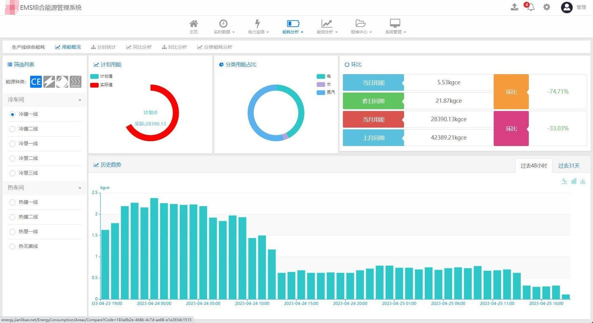

为什么公共机构适合能源费用托管
医院、高校与机关办公楼具有用能时间长、设备系统复杂、能耗基数较大的特点。这类场景的节能改造往往需要持续投入与专业运维，单靠一次性工程难以保证长期效果。
能源费用托管属于合同能源管理的一种形式。通俗地说，是由专业服务方承担系统改造与运行管理，双方按约定的基准能耗与节约效果核算费用，从而把节能责任落到实际运行结果上。

项目落地要抓住三个环节
一是摸清能耗底数。对建筑面积、用能人数、主要设备与近年能耗做完整盘点，合理设定基准。二是明确边界与核算口径。托管范围涵盖哪些系统、节能量如何测量与验证，需要在合同中写清楚。三是改造与运维并重。中央空调、照明、水泵与风机等系统的改造效果，依赖持续的运行管理才能稳定保持。
广东建卓科技有限公司提供节能减排、工程咨询、设计、施工、调试与运维一体服务，可按公共机构的实际用能结构制定改造方案。
能耗监测是托管项目的基础
托管的费用核算依赖可靠数据。能源管理系统通过采集层接入电表、水表、蒸汽表与重点设备，形成分项计量、自动报表与异常告警能力，帮助双方对节能效果形成一致口径。

效果核正与持续改进
托管期内需按周期对比基准能耗与实际能耗，并结合天气、业务量等变量做必要修正。发现用能异常时及时定位设备或管理原因，把节能从一次性改造转为持续过程。
如需了解能源管理系统与一体服务内容，可查看能源管理系统与业务领域；服务电话0769-22996692，欢迎交流公共机构用能现状。